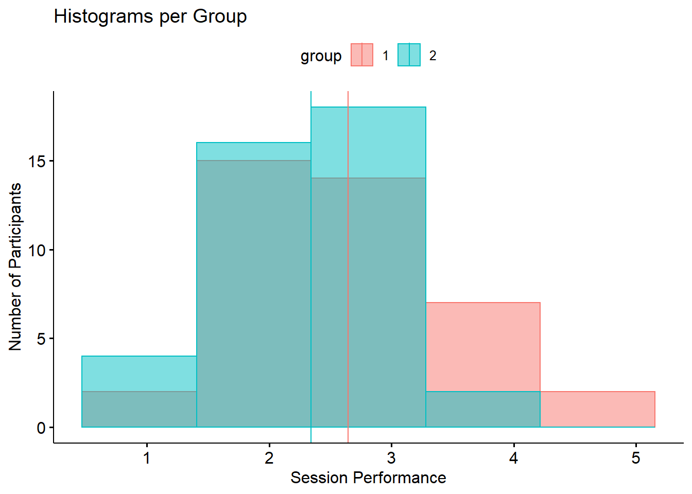
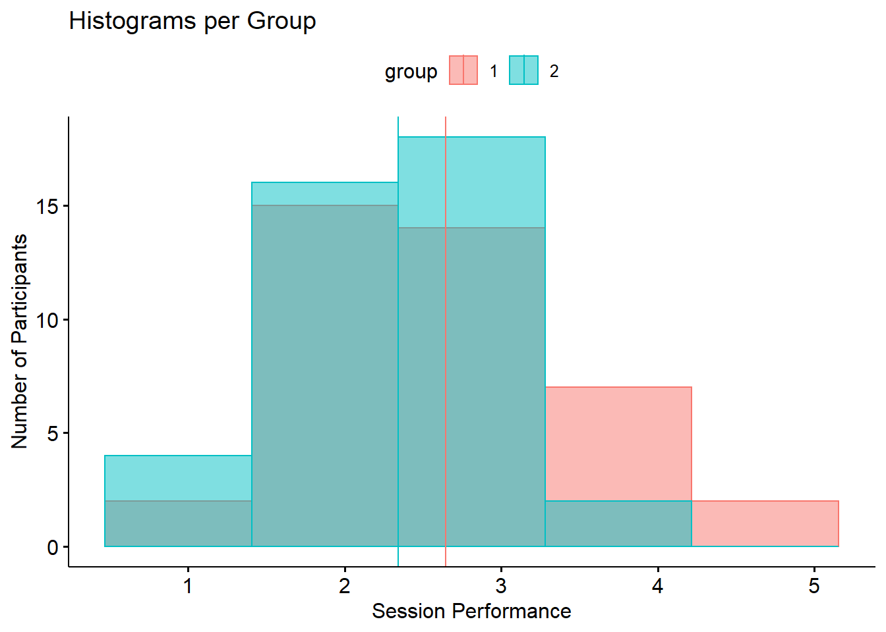

Lab Session 7 (Week 16)
2.20 Learning Objectives
In this week’s session we will be focusing on some “guess work”. You will be given a partial script and some graphs. Your task will be to complete the code in order to produce the end-graphs on your own. These tasks will prepare you for the graphs you will need to create on your own for your report.
2.21 To start with.
First, start RStudio and create a new project. Your project should be named “Week 16 lab”
Go on moodle in week 9 in the lab session and download two files.
1. “week16_data.csv”
2. “week16_script.R”
Make sure you save both files in the folder you just created for your new project.
Once you have that then load the R script and execute only the first 6 lines.
In order to load the script go to File > Open File then select the “week9script.R” file and click on Open. If you can see the dataframe df9 in your environment then you are all set to do the rest of the work in the lab.
 
